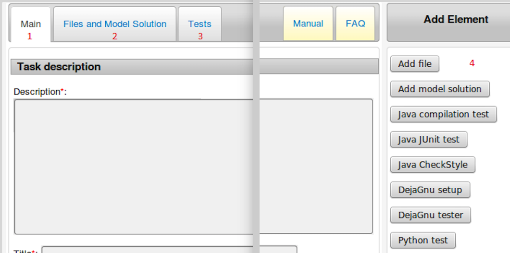
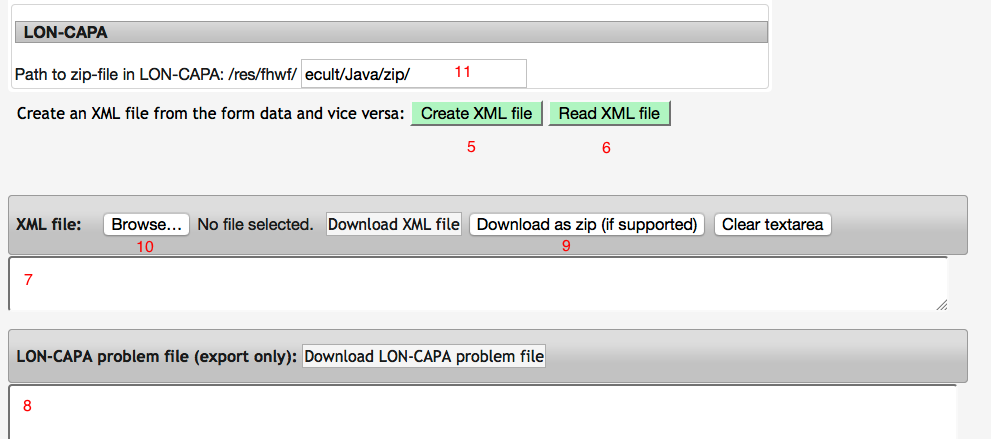

Der XML-Editor ermöglicht es, eine XML-Datei für Programmieraufgaben neu zu erstellen (einschließlich einer Problem-Datei für LON-CAPA). Außerdem kann eine XML-Datei im entsprechenden Format eingelesen, um gewünschte Tests oder zusätzliche Dateien erweitert und wieder exportiert werden. Das XML-Format muss dem Standard für den Austausch von Programmieraufgaben entsprechen.
Zunächst werden unter dem Main-Reiter (1) der Aufgabentext (Description), der Titel der Aufgabe, die Programmiersprache, die maximale Dateigröße der studentischen Einreichung und der Dateityp (als MimeType) eingegeben. Der LON-CAPA-Pfad muss geändert werden, so dass er den Benutzernamen und eventuell die Namen der Unterordner enthält.
Wichtig ist im gesamten Formular: Alle mit einem roten Stern (*) gekennzeichneten Felder müssen ausgefüllt sein, damit eine Aufgabe exportiert werden kann.

Hinter dem Files-and-Model-Solution-Reiter (2) befindet sich der Code der jeweiligen Tests sowie der Code für die Musterlösung(en). Mittels des Add-file-Knopfs können weitere Dateien hinzugefügt werden. Hinter dem Tests-Reiter (3) befinden sich die Tests, z.B. JUnit oder Compiler Tests. Nach Erzeugung eines neuen Tests, einer neuen Datei oder Musterlösung schaltet der Editor jeweils auf den entsprechenden Reiter um.
Für Dateien gilt: Jede Datei muss einen Namen und eine entsprechende Endung (z.B. „.java“) erhalten. Es kann festgelegt werden, ob Dateien bei der späteren Nutzung für die Studierenden sichtbar (library) oder unsichtbar (internal, internal-library) sind, als Code-Template (template) bereitgestellt werden oder weitere Details zur Aufgabenstellung (instruction) enthalten. Dateien beinhalten zumeist Tests, zum Beispiel Unittests, Blackbox Tests oder statische Tests. Außerdem muss mindestens eine Datei mit der zu erwartenden Musterlösung beigefügt werden. Der Zweck jeder Datei wird dadurch angegeben, dass sie mit einem Test oder einer Musterlösung verknüpft wird. Die Verbindung zwischen der Datei und ihrem Zweck erfolgt über den Dateinamen.
Für Tests gilt: Innerhalb der Testfelder gibt es mehrere einstellbare Optionen. Es kann festgelegt werden, ob ein Testergebnis für Studierende sichtbar (public) ist oder nicht. Die Auswahl „required“ legt fest, ob ein Test bestanden werden muss, um eine Aufgabe zu bestehen oder nicht. Anhand der verschiedenen Knöpfe auf der rechten Seite (4) können weitere Tests hinzugefügt werden.
Sobald alle gewünschten Dateien und Tests hinzugefügt wurden, kann die Datei exportiert werden. Dazu wird der Create-XML-File-Knopf (5) verwendet. Danach erscheint die Aufgabe als direkt nutzbare XML-Datei im Feld (7). Außerdem erscheint darunter im Feld (8) die Problem-Datei im LON-CAPA-Format. Wenn es gewünscht wird, kann der XML-Code auch als ZIP exportiert werden, welche direkt in LON-CAPA hochgeladen werden kann. Dazu muss lediglich der Download-as-zip-Knopf (9) verwendet werden.

Eine XML-Datei oder eine Zip-Datei, welche eine task.xml enthält, können auch zu Bearbeitungszwecken eingelesen werden. Dazu wird über den Knopf (10) eine Datei gesucht und hochgeladen oder mit Copy/Paste direkt in das Feld (7) eingefügt. Danach wird der Read-XML-file-Knopf (6) verwendet, um die Datei in das Formular einzulesen. Die Aufgabe kann nun wie oben beschrieben verändert und auch wieder exportiert werden.
Wie bereits erwähnt, kann die generierte ZIP-Datei in LON-CAPA hochgeladen werden. In LON-CAPA muss dazu eine neue Aufgabe ohne vorgegebenen Inhalt erstellt werden. Der Inhalt aus Feld (8) (d.h. die LON-CAPA-Problem-Datei) wird in die leere Aufgabe eingefügt. Hierbei muss allerdings beachtet werden, dass der in der LON-CAPA-Problem-Datei angegebene Pfad (welcher im Main-Bereich unter (11) eingestellt wurde) auch mit dem Ort übereinstimmt, an dem die ZIP-Datei gespeichert wurde. Zuletzt sei noch zu beachten, dass die ZIP-Datei auch schon beim Testen der Aufgabe veröffentlicht werden muss, da diese sonst nicht verarbeitet wird.